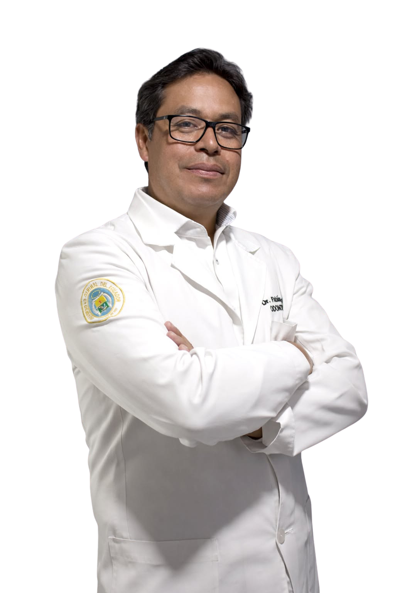

FABIÁN ROBLES
Un hombre que trabaja junto a la gente.

ORLANDO FABIÁN
ROBLES BENAVIDES
Candidato a la Alcaldía del Cantón Montúfar
 Alcaldía de Montúfar
Alcaldía de Montúfar
Fabián Robles tiene 48 años, es odontólogo. Es el reflejo de miles de montufareños que progresan y construyen su camino con trabajo, esfuerzo, vocación y compromiso.
Cree firmemente que la política debe ser entendida y vivida como una herramienta para transformar vidas, no para servirse de ella. Su propuesta nace desde la experiencia, pero sobre todo desde el corazón.
Vive día a día la realidad de nuestras familias: levantarse, luchar y no rendirse; y como padre, esa vivencia le permite entender, con sensibilidad y claridad, las necesidades urgentes de su comunidad.
Con más de 25 años de servicio profesional; desde su vocación como odontólogo, atiende a las personas con humanidad, afecto, compromiso y respeto a su dignidad. El contacto directo con la gente ha guiado su trayectoria, escuchando sus necesidades y trabajando por mejorar su calidad de vida.
Sus abuelitos le inculcaron y transmitieron su amor por la ganadería y agricultura, le apasiona el campo, el respeto a la naturaleza y los animales.
El deporte favorito es el fútbol y es hincha de El Nacional.
Además ha promocionado y participado en obras de carácter social.
Odontólogo con +25 Años de Servicio
Atención con humanidad, afecto y profundo respeto a la dignidad de cada persona, escuchando de cerca a la comunidad.
Amor por el Campo y la Naturaleza
Legado de sus abuelitos por la ganadería y la agricultura, con genuina pasión por nuestra tierra y respeto a los animales.
Padre de Familia y Gestor Social
Conoce el esfuerzo diario de levantarse y luchar por la familia, promoviendo permanentemente obras de carácter social.
Impulso al Fútbol y al Deporte
Apasionado por el fútbol e hincha de El Nacional, convencido del deporte como motor de unión y salud para la juventud.